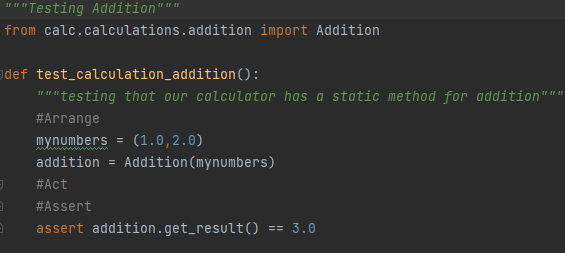
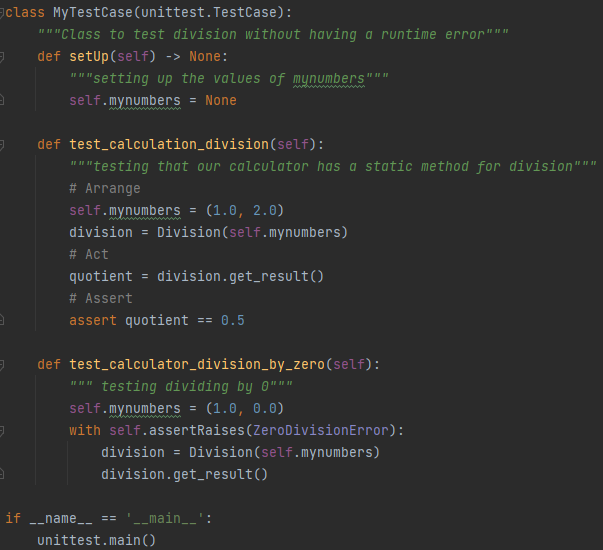

Testing is an extremely important part of coding. There are so many errors and possible rare cases that its reckless to not have any proper testing!
In python for the sake of syntax and programs like travis, theres a very specific syntax for naming testing folders, files, and methods.
Folders should be named tests, Files should have "..._test", And Methods should have "test_..."
In the methods, "AAA" is a specific series of steps needed to make sure that tests are done accurately.
The first is Arrange. This means creating a proper environment to test your method, this can mean many things like creating new objects or clearing old ones.
The second is Act. This means taking the proper actions which results will be checked in the final step. This can include using methods to change values and passing in new values into objects.
The final step is Assert. This means checking the result of the action and making sure that it matches the expected value or conclusion
Here is 1 example of AAA testing:

Arrange: the necessary classes are created
Act: the function and changes are performed
Assert: the real result is checked for whether or not it equals the expected result
Here is 1 more example of AAA testing:

Arrange: the necessary classes are created, in this case being slightly more complex in order to handle errors
Act: the function and changes are performed within the exception handler
Assert: the real result is checked for whether or not it equals the expected result, which in this case is intentionally an error.
The third article will show you deep explanations of the core fundamenals of OOP.